GTA IV: 18 Anni di Niko Bellic
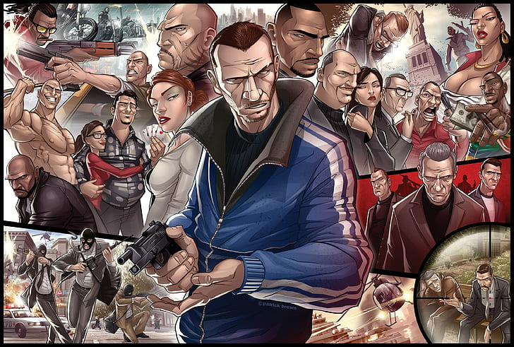
L'Incipit: L'Arrivo a Liberty City
Niko Bellic scende dalla Platypus con una speranza: lasciarsi alle spalle le ombre della guerra. Mentre la nave attracca a Broker, le promesse del cugino Roman sul "Sogno Americano" risuonano nell'aria, ma la realtà è fatta di debiti e vecchi rancori.
La Legge di Liberty City
Sopravvivere in questa città significa essere costantemente sotto l'occhio vigile della LCPD. Ogni angolo di strada può trasformarsi in una trappola.
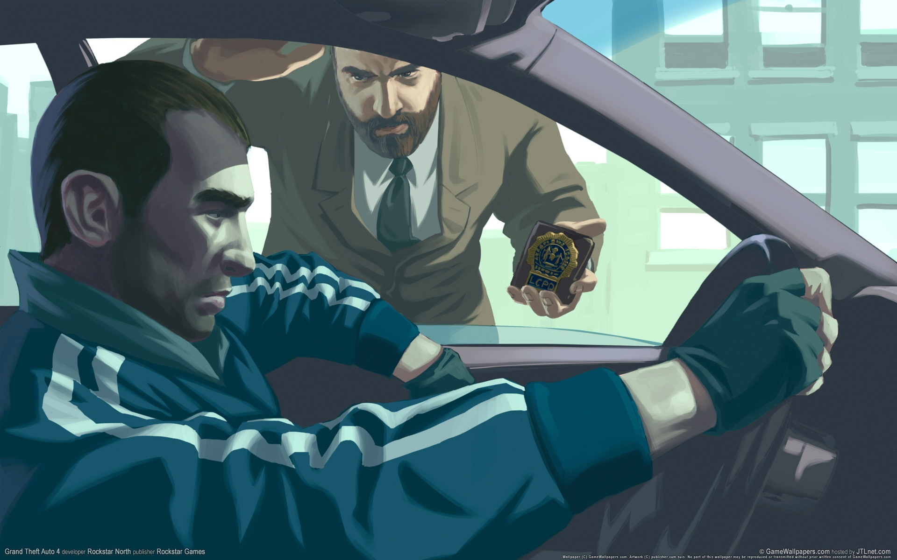
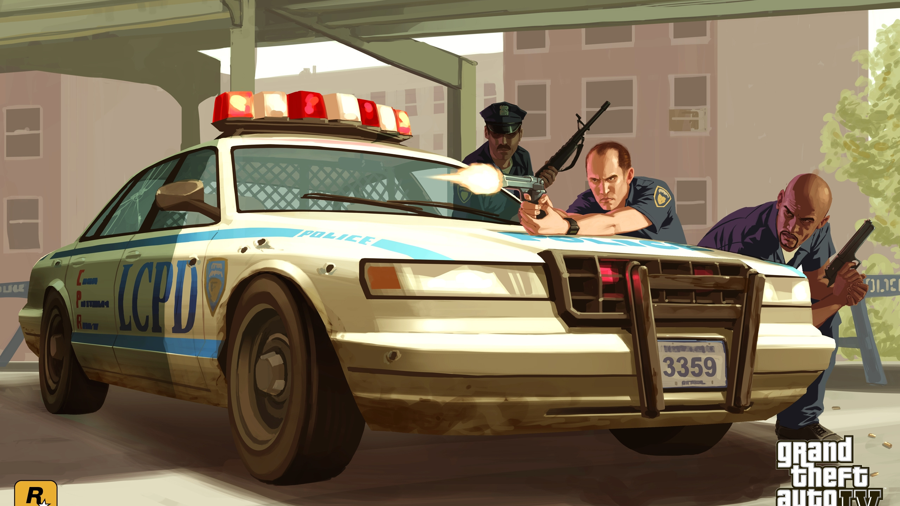
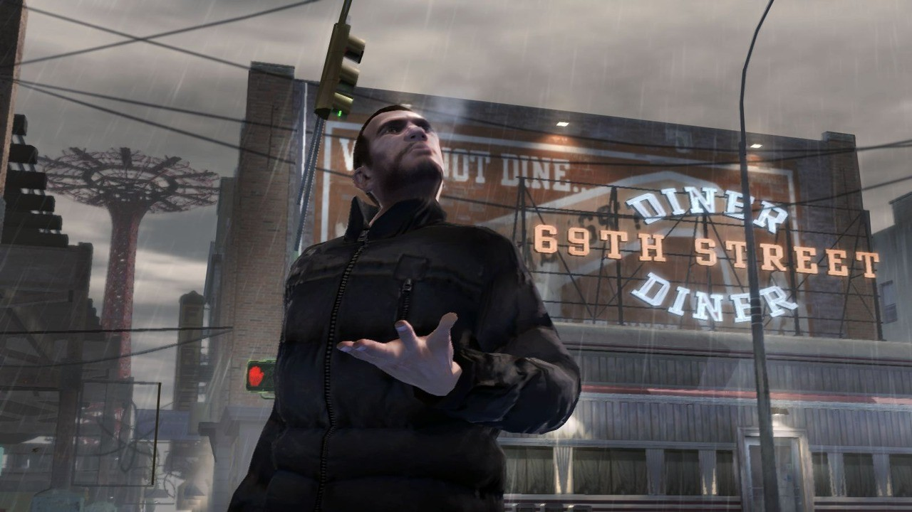
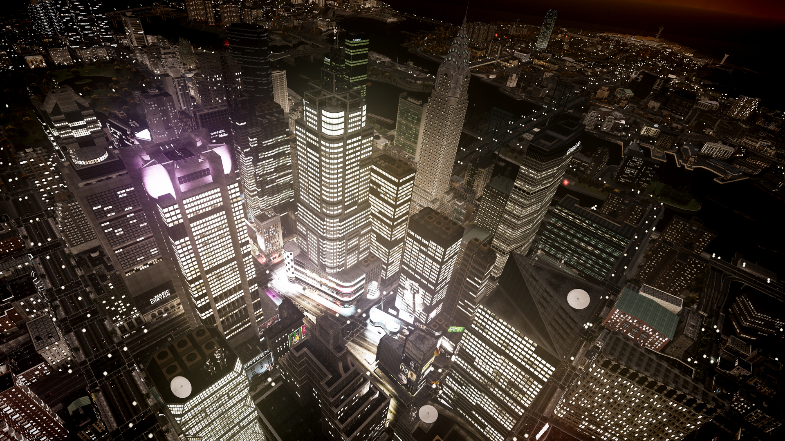
"Life is complicated. I killed people, smuggled people, sold people. Maybe here, things will be different."
Dossier Personaggi
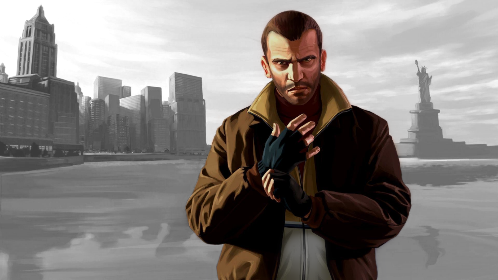
Niko Bellic
Background: Ex soldato veterano delle guerre balcaniche.
Affiliazione: Indipendente (Freelance).
Descrizione: Cinico e tormentato, Niko cerca redenzione in America. La sua personalità è definita da un forte senso di lealtà familiare unito a una fredda competenza militare. La sua storia è una fuga dal passato che finisce per rincorrerlo nelle strade di Liberty City.
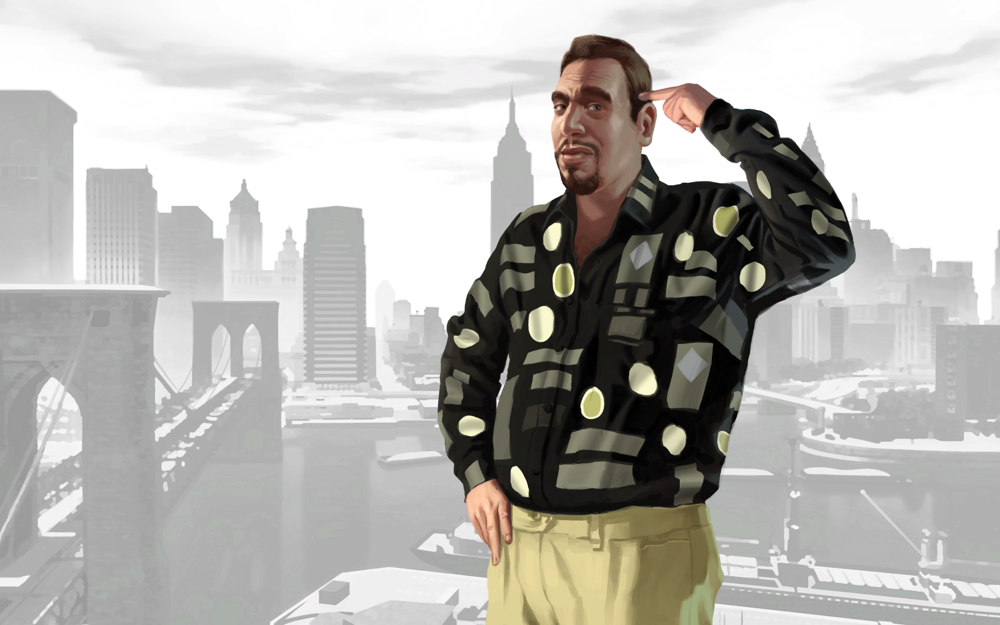
Roman Bellic
Background: Cugino di Niko e proprietario di un deposito taxi a Broker.
Affiliazione: Bellic Enterprises.
Descrizione: Ottimista incurabile e amante del lusso, Roman trascina Niko nei guai a causa dei suoi debiti di gioco. Nonostante la sua codardia, il suo carattere affettuoso rappresenta l'unico legame di Niko con una vita normale.
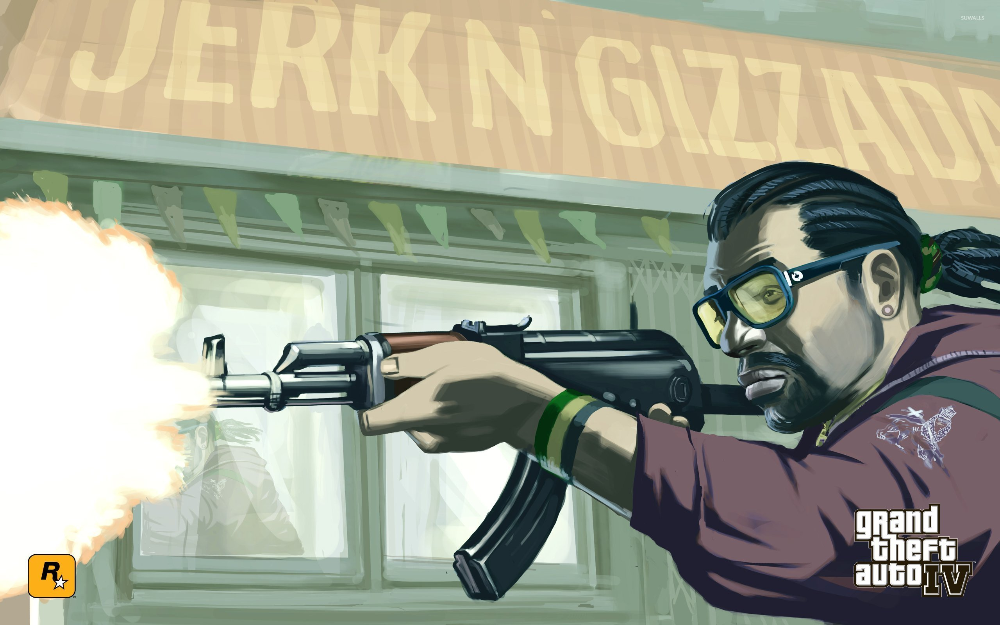
Little Jacob
Background: Trafficante d'armi giamaicano basato a Dukes.
Affiliazione: Yardies.
Descrizione: Leale e spirituale, Jacob è il più stretto alleato di Niko. La sua personalità calma e il suo forte codice d'onore lo rendono un pilastro di stabilità in un mondo di traditori.
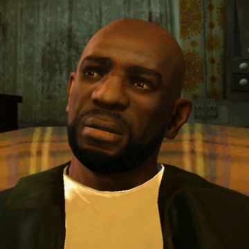
Dwayne Forge
Background: Ex boss di North Holland, recentemente uscito di prigione.
Affiliazione: North Holland Gang (Ex Capo).
Descrizione: Malinconico e deluso, Dwayne incarna il fallimento del crimine vecchio stile. La sua storia è segnata dalla depressione per aver perso il suo impero, trovando in Niko un amico che comprende il peso del tradimento.
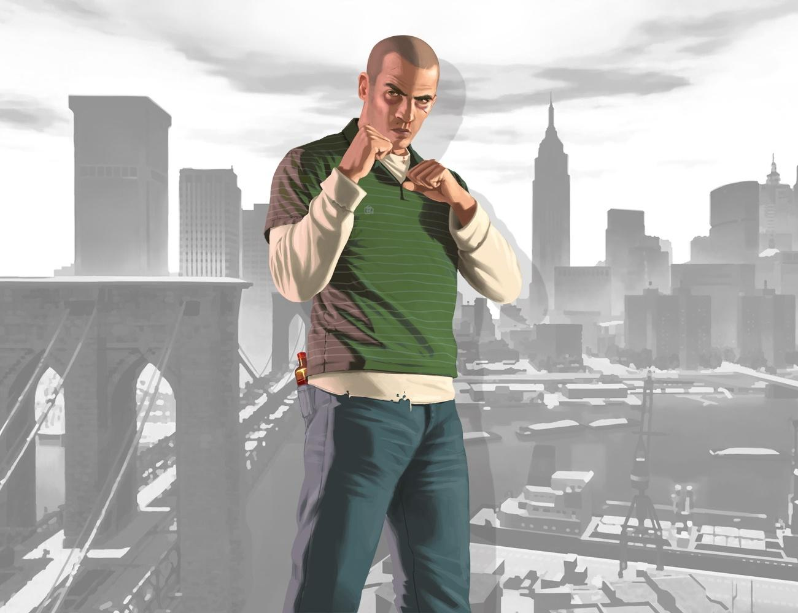
Patrick "Packie" McReary
Background: Il più giovane e impulsivo della famiglia McReary.
Affiliazione: Mafia Irlandese.
Descrizione: Ladro esperto e uomo di strada puro. Packie è legato a Niko da un'amicizia nata sotto il fuoco delle sparatorie. La sua personalità caotica nasconde un profondo dolore per il declino della sua famiglia.
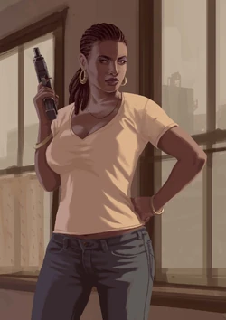
Elizabetta Torres
Background: Regina del narcotraffico a Bohan per oltre un decennio.
Affiliazione: Indipendente.
Descrizione: Autoritaria ma logorata dalla paranoia. La sua storia mostra il crollo di un impero criminale sotto la pressione della legge, trasformando il suo carattere forte in una furia instabile.
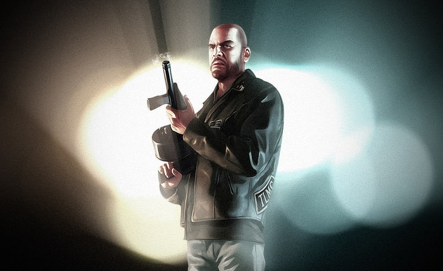
Johnny Klebitz
Background: Vicepresidente e leader operativo dei Lost MC.
Affiliazione: The Lost MC.
Descrizione: Pragmatico e protettivo verso la sua "fratellanza". Johnny è un biker che cerca di bilanciare onore e sopravvivenza in una guerra tra gang che non ha cercato.
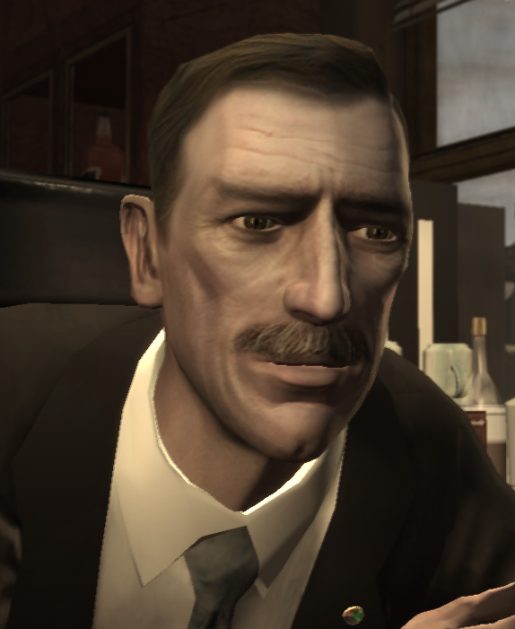
Francis McReary
Background: Vicecommissario di polizia corrotto.
Affiliazione: LCPD.
Descrizione: Ipocrita e manipolatore. Usa Niko per ripulire il suo passato criminale in cambio di silenzio, rappresentando la corruzione morale delle istituzioni di Liberty City.
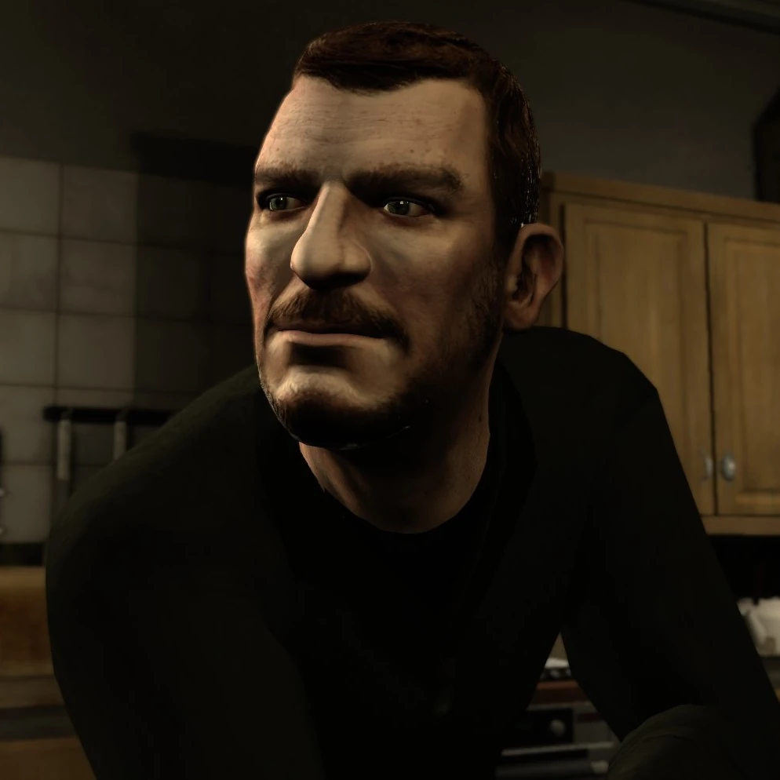
Gerald "Gerry" McReary
Background: Mente criminale dei McReary.
Affiliazione: Mafia Irlandese.
Descrizione: Freddo e calcolatore, Gerry pianifica le mosse della famiglia anche dal carcere. Non si fida di nessuno e vede il mondo solo attraverso il prisma del potere e del controllo.
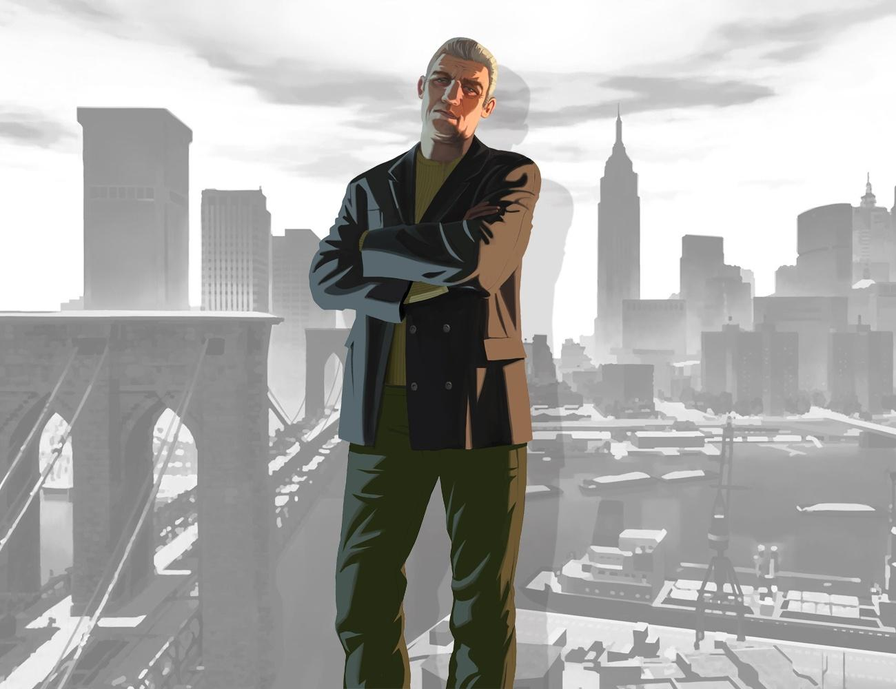
Derrick McReary
Background: Ex dinamitardo dell'IRA con un passato di esilio.
Affiliazione: Mafia Irlandese (Inattivo).
Descrizione: Distrutto dai sensi di colpa e dalle dipendenze, Derrick è l'ombra di un uomo. La sua personalità fragile lo rende l'anello debole e più tragico della famiglia McReary.
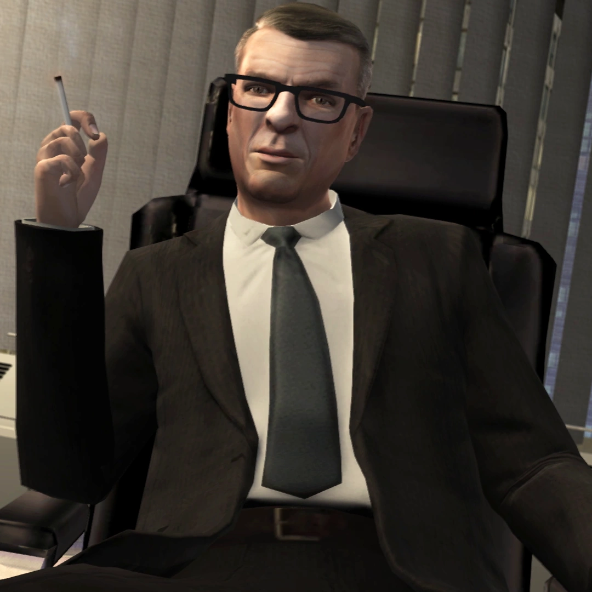
Uomo dell'United Liberty Paper
Background: Agente governativo sotto copertura.
Affiliazione: Governo degli Stati Uniti.
Descrizione: Colto, misterioso e spietato. Tratta Niko come una risorsa sacrificabile, dimostrando come il vero potere a Liberty City non risieda nelle strade, ma negli uffici governativi.
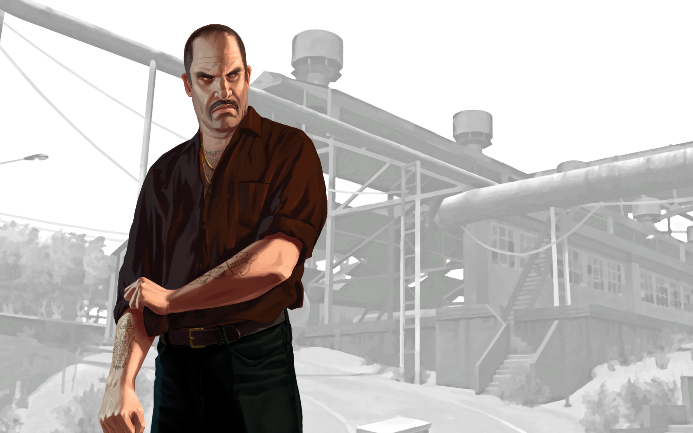
Vlad Glebov
Background: Strozzino russo di basso livello.
Affiliazione: Mafia Russa.
Descrizione: Bullo e arrogante, Vlad commette l'errore fatale di sottovalutare Niko. La sua morte scatena la guerra con le grandi famiglie russe.

Dimitri Rascalov
Background: Mente criminale russa e principale antagonista.
Affiliazione: Mafia Russa.
Descrizione: Manipolatore puro. Dimitri non crede nell'onore, ma solo nell'opportunismo. È il riflesso oscuro del tradimento che Niko ha cercato di fuggire per tutta la vita.
ATTENZIONE SPOILER: La vendetta è un piatto che si consuma insieme all'anima.
© 2026 Red Company